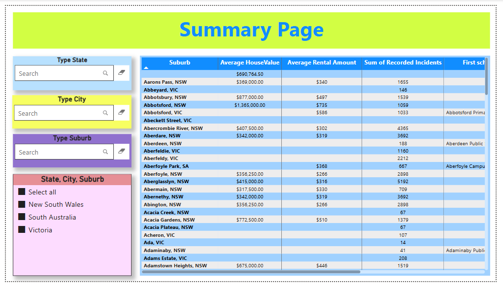
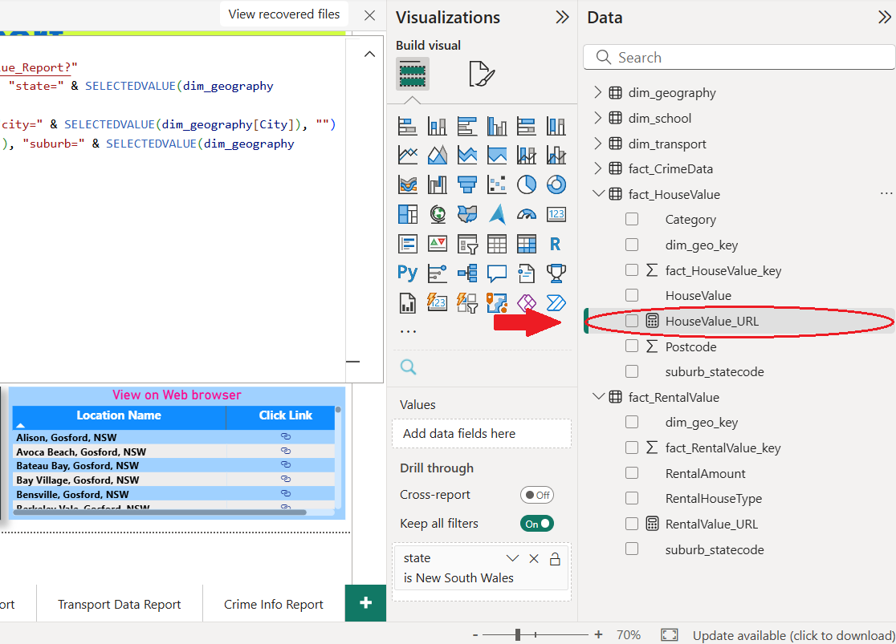
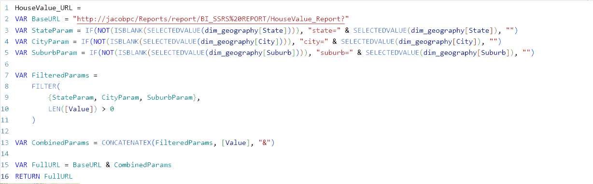
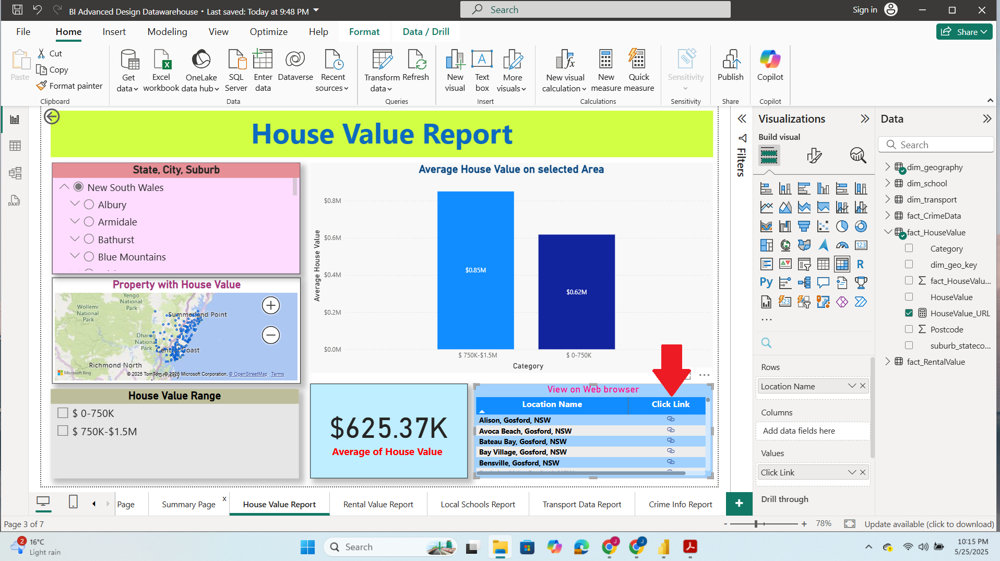

PowerBI and SSRS Integration (Australian Dataset)
“In This Task the we integrate SSRS report on our PowerBI Dashboard via a URL hyperlink.”
Tools and Programming Language used:
For Hyperlink generation we utilize DAX (PowerBI)
For Paginated report on web browser (SSRS) [Visual Studio]
The first challenge in this task was figuring out how to set up, store, and create a dynamic hyperlink that will connect the Power BI data to the SQL Server paginated report web portal.

To address these challenges, I created a calculated column for each table and utilize a DAX function namely "SELECTEDVALUE" to capture the user's selected filter.


By placing a dynamic URL hyperlink in the matrix column, users can easily navigate to the desired data in a paginated report.
